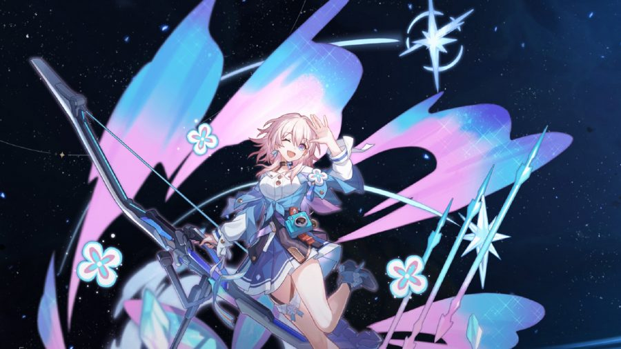

Personajes
Trailblazer(Femenino)
Es el personaje principal versión femenina quien fue despertada en una cabina extraña dentro una nabe espacial que está sufriendo una feroz batalla entre los pasajeros y unos seres extraños...
Quién sabe lo que le espera a la protagonista en aquella escena de caos y destrucción
Trailblazer(Masculino)
Es el personaje principal versión masculina quien fue despertado en una cabina extraña dentro de una nabe espacial que está sufriendo una feroz batalla entre los pasajeros y unos seres extraños...
Quién sabe lo que le espera al protagonista en aquella escena de caos y destrucción
Welt
Welt, el antiguo Soberano Antientropía, sabio y experimentado, heredó el nombre del mundo y lo salvó muchas veces de la aniquilación.
Cuando finalizó el incidente de St. Fontaine, Welt no tuvo más remedio que cruzar el portal con quien provocó ese incidente.
Probablemente, ni él mismo sabía que lo que le esperaba al otro lado era un nuevo viaje y nuevos compañeros.

Una chica vivaz y excéntrica apasionada por todo lo que interesa a las muchachas de su edad. Por ejemplo, tomar fotos...
7 de marzo
Una chica vivaz y excéntrica apasionada por todo lo que interesa a las muchachas de su edad. Por ejemplo, tomar fotos...
Despertó tras pasar una eternidad dando vueltas por el espacio dentro de un bloque de hielo y desconoce todo lo relativo a su identidad y su pasado. Tras un breve periodo de desánimo, adoptó como nombre la fecha en la que renació.
Ese día, Siete de Marzo comenzó su nueva vida.
Dan Heng
Un joven distante y reservado que blande una lanza llamada Perforanubes. Es el guardia del Expreso durante su larga expedición trazacaminos.
Dan Heng no habla mucho de su pasado. De hecho, se unió a la tripulación para escapar de él.
Pero ¿podrá el tren alejarlo de su pasado?

“PlayStation Family Mark” and “PlayStation” are registered trademarks or trademarks of Sony Interactive Entertainment Inc.
Epic, Epic Games, Epic Games Store, the Epic Games Store logo, and Epic Online Services are trademarks and/or registered trademarks of Epic Games.
All other trademarks are the property of their respective owners.
All other trademarks are the property of their respective owners.

Copyright © DANIELOXTER. All Rights Reserved.